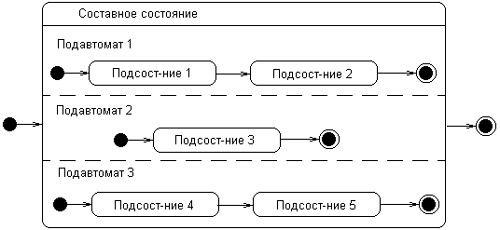
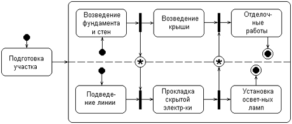

Рассмотренная выше диаграмма классов представляет собой логическую модель статического представления моделируемой системы. Речь идет о том, что на данной диаграмме изображаются только взаимосвязи структурного характера, не зависящие от времени или реакции системы на внешние события. Однако для большинства физических систем, кроме самых простых и тривиальных, статических представлений совершенно недостаточно для моделирования процессов функционирования подобных систем как в целом, так и их отдельных подсистем и элементов.
Рассмотрим простой пример. Любое техническое устройство, такое как телевизор, компьютер, автомобиль, телефонный аппарат в самом общем случае может характеризоваться такими своими состояниями, как "исправен" и "неисправен". Интуитивно ясно, какой смысл вкладывается в каждое из этих понятий. Более того, использование по назначению данного устройства возможно только тогда, когда оно находится в исправном состоянии. В противном случае необходимо предпринять совершенно конкретные действия по его ремонту и восстановлению работоспособности.
Однако понимание семантики понятия состояния представляет определенные трудности. Дело в том, что характеристика состояний системы не зависит (или слабо зависит) от логической структуры, зафиксированной в диаграмме классов. Поэтому при рассмотрении состояний системы приходится на время отвлечься от особенностей ее объектной структуры и мыслить совершенно другими категориями, образующими динамический контекст поведения моделируемой системы. Поэтому при построении диаграмм состояний необходимо использовать специальные понятия, которые и будут рассмотрены в данной главе.
Ранее, в главах 1 и 4, было отмечено, что каждая прикладная система характеризуется не только структурой составляющих ее элементов, но и некоторым поведением или функциональностью. Для общего представления функциональности моделируемой системы предназначены диаграммы вариантов использования, которые на концептуальном уровне описывают поведение системы в целом. Сейчас наша задача заключается в том, чтобы представить поведение более детально на логическом уровне, тем самым раскрыть сущность ответа на вопрос: "В процессе какого поведения система обеспечивает необходимую функциональность?".
Для моделирования поведения на логическом уровне в языке UML могут использоваться сразу несколько канонических диаграмм: состояний, деятельности, последовательности и кооперации, каждая из которых фиксирует внимание на отдельном аспекте функционирования системы. В отличие от других диаграмм диаграмма состояний описывает процесс изменения состояний только одного класса, а точнее — одного экземпляра определенного класса, т. е. моделирует все возможные изменения в состоянии конкретного объекта. При этом изменение состояния объекта может быть вызвано внешними воздействиями со стороны других объектов или извне. Именно для описания реакции объекта на подобные внешние воздействия и используются диаграммы состояний.
Главное предназначение этой диаграммы — описать возможные последовательности состояний и переходов, которые в совокупности характеризуют поведение элемента модели в течение его жизненного цикла. Диаграмма состояний представляет динамическое поведение сущностей, на основе спецификации их реакции на восприятие некоторых конкретных событий. Системы, которые реагируют на внешние действия от других систем или от пользователей, иногда называют реактивными. Если такие действия инициируются в произвольные случайные моменты времени, то говорят об асинхронном поведении модели.
Хотя диаграммы состояний чаще всего используются для описания поведения отдельных экземпляров классов (объектов), но они также могут быть применены для спецификации функциональности других компонентов моделей, таких как варианты использования, актеры, подсистемы, операции и методы.
Диаграмма состояний по существу является графом специального вида, который представляет некоторый автомат. Понятие автомата в контексте UML обладает довольно специфической семантикой, основанной на теории автоматов. Вершинами этого графа являются состояния и некоторые другие типы элементов автомата (псевдосостояния), которые изображаются соответствующими графическими символами. Дуги графа служат для обозначения переходов из состояния в состояние. Диаграммы состояний могут быть вложены друг в друга, образуая вложенные диаграммы более детального представления отдельных элементов модели. Для понимания семантики конкретной диаграммы состояний необходимо представлять не только особенности поведения моделируемой сущности, но и знать общие сведения по теории автоматов.
Автомат (state machine) в языке UML представляет собой некоторый формализм для моделирования поведения элементов модели и системы в целом. В метамодели UML автомат является пакетом, в котором определено множество понятий, необходимых для представления поведения моделируемой сущности в виде дискретного пространства с конечным числом состояний и переходов. С другой стороны, автомат описывает поведение отдельного объекта в форме последовательности состояний, которые охватывают все этапы его жизненного цикла, начиная от создания объекта и заканчивая его уничтожением. Каждая диаграмма состояний представляет некоторый автомат.
Простейшим примером визуального представления состояний и переходов на основе формализма автоматов может служить рассмотренная выше ситуация с исправностью технического устройства, такого как компьютер. В этом случае вводятся в рассмотрение два самых общих состояния: "исправен" и "неисправен" и два перехода: "выход из строя" и "ремонт". Графически эта информация может быть представлена в виде изображенной ниже диаграммы состояний компьютера (рис. 6.1).

Рис. 6.1. Простейший пример диаграммы состояний для технического устройства типа компьютер
Основными понятиями, входящими в формализм автомата, являются состояние и переход. Главное различие между ними заключается в том, что длительность нахождения системы в отдельном состоянии существенно превышает время, которое затрачивается на переход из одного состояния в другое. Предполагается, что в пределе время перехода из одного состояния в другое равно нулю (если дополнительно ничего не сказано). Другими словами, переход объекта из состояния в состояние происходит мгновенно.
В общем случае автомат представляет динамические аспекты моделируемой системы в виде ориентированного графа, вершины которого соответствуют состояниям, а дуги — переходам. При этом поведение моделируется как последовательное перемещение по графу состояний от вершины к вершине по связывающим их дугам с учетом их ориентации. Для графа состояний системы можно ввести в рассмотрение специальные свойства.
Одним из таких свойств является выделение из всей совокупности состояний двух специальных: начального и конечного. Хотя ни в графе состояний, ни на диаграмме состояний время нахождения системы в том или ином состоянии явно не учитывается, предполагается, что последовательность изменения состояний упорядочена во времени. Другими словами, каждое последующее состояние всегда наступает позже предшествующего ему состояния.
Еще одним свойством графа состояний может служить достижимость состояний. Речь идет о том, что навигация или ориентированный путь в графе состояний определяет специальное бинарное отношение на множестве всех состояний системы. Это отношение характеризует потенциальную возможность перехода системы из рассматриваемого состояния в некоторое другое состояние. Очевидно, для достижимости состояний необходимо наличие связывающего их ориентированного пути в графе состояний.
Формализм автоматов допускает вложение одних автоматов в другие для уточнения внутренней структуры отдельных более общих состояний (макросостояний). В этом случае вложенные автоматы получили название подавтоматов. Подавтоматы могут использоваться для внутренней спецификации процедур и функций, образующих поведение исходного объекта. Например, состояние неисправности технического устройства (рис. 6.1) может быть детализировано на отдельные подсостояния, каждое из которых может характеризовать неисправность отдельных подсистем, входящих в состав данного устройства.
В языке UML понятие автомата дополнено специальной семантикой входящих в соответствующий пакет элементов. Далее в этой главе будут рассмотрены основные элементы поведения, которые образуют концептуальный базис, необходимый для правильного построения диаграмм состояний.
Формализм обычного автомата основан на выполнении следующих обязательных условий:
Примечание
Данное условие может быть изменено явным образом для сохранения некоторых аспектов предыстории поведения объекта на основе введения в рассмотрение так называемых исторических состояний, которые будут описаны ниже в этой главе.
Примечание
Это условие ограничивает применение автоматов для моделирования последовательных процессов. Необходимость моделирования параллельных процессов приводит к рассмотрению в контексте одной модели нескольких автоматов, каждый из которых специфицирует отдельный процесс поведения.
Примечание
Концепция времени в явной форме учитывается при построении диаграммы деятельности, когда требуется синхронизировать во времени процессы взаимодействия нескольких объектов модели. Поскольку диаграмма состояний предназначена для моделирования поведения объекта, которое определяется асинхронными событиями, эти события могут происходить в заранее неизвестные моменты времени.
Таким образом, правила поведения объекта, моделируемого некоторым автоматом, определяются, с одной стороны, общим формализмом автомата, а с другой — его графическим изображением в языке UML в форме конкретной диаграммы состояний.
Понятие состояния (state) является фундаментальным не только в метамоде-ли языка UML, но и в прикладном системном анализе. Ранее в главе 1 кратко были рассмотрены особенности представления динамических характеристик сложных систем, традиционно используемых для моделирования поведения. Вся концепция динамической системы основывается на понятии состояния системы. Однако семантика состояния в языке UML имеет целый ряд специфических особенностей.
В языке UML под состоянием понимается абстрактный метакласс, используемый для моделирования отдельной ситуации, в течение которой имеет место выполнение некоторого условия. Состояние может быть задано в виде набора конкретных значений атрибутов класса или объекта, при этом изменение их отдельных значений будет отражать изменение состояния моделируемого класса или объекта.
Следует заметить, что не каждый атрибут класса может характеризовать его состояние. Как правило, имеют значение только такие свойства элементов системы, которые отражают динамический или функциональный аспект ее поведения. В этом случае состояние будет характеризоваться некоторым инвариантным условием, включающим в себя только значимые для поведения класса атрибуты и их значения.
Например, инвариант может представлять статическую ситуацию, когда объект находится в состоянии ожидания возникновения некоторого внешнего события. С другой стороны, инвариант используется для моделирования динамических аспектов, когда в ходе процесса выполняются некоторые действия. В этом случае моделируемый элемент переходит в рассматриваемое состояние в момент начала соответствующей деятельности и покидает данное состояние в момент ее завершения.

Рис. 6.2. Графическое изображение состояний на диаграмме состояний
Состояние на диаграмме изображается прямоугольником со скругленными вершинами (рис. 6.2). Этот прямоугольник, в свою очередь, может быть разделен на две секции горизонтальной линией. Если указана лишь одна секция, то в ней записывается только имя состояния (рис. 6.2, а). В противном случае в первой из них записывается имя состояния, а во второй — список некоторых внутренних действий или переходов в данном состоянии (рис. 6.2, б). При этом под действием в языке UML понимают некоторую атомарную операцию, выполнение которой приводит к изменению состояния или возврату некоторого значения (например, "истина" или "ложь").
Имя состояния представляет собой строку текста, которая раскрывает содержательный смысл данного состояния. Имя всегда записывается с заглавной буквы. Поскольку состояние системы является составной частью процесса ее функционирования, рекомендуется в качестве имени использовать глаголы в настоящем времени (звенит, печатает, ожидает) или соответствующие причастия (занят, свободен, передано, получено). Имя у состояния может отсутствовать, т. е. оно является необязательным для некоторых состояний. В этом случае состояние является анонимным, и если на диаграмме состояний их несколько, то все они должны различаться между собой.
Эта секция содержит перечень внутренних действий или деятельностей, которые выполняются в процессе нахождения моделируемого элемента в данном состоянии. Каждое из действий записывается в виде отдельной строки и имеет следующий формат:
<метка-дёйствия '/' выражение-действия>
Метка действия указывает на обстоятельства или условия, при которых будет выполняться деятельность, определенная выражением действия. При этом выражение действия может использовать любые атрибуты и связи, которые принадлежат области имен или контексту моделируемого объекта. Если список выражений действия пустой, то разделитель в виде наклонной черты '/' может не указываться.
Перечень меток действия имеет фиксированные значения в языке UML, которые не могут быть использованы в качестве имен событий. Эти значения следующие:
В последнем случае при завершении события генерируется соответствующий результат;
Во всех остальных случаях метка действия идентифицирует событие, которое запускает соответствующее выражение действия. Эти события называются внутренними переходами и семантически эквивалентны переходам в само это состояние, за исключением той особенности, что выход из этого состояния или повторный вход в него не происходит. Это означает, что действия входа и выхода не выполняются.
В качестве примера состояния рассмотрим ситуацию ввода пароля пользователя при аутентификации входа в некоторую программную систему (рис. 6.3). В этом случае список внутренних действий в данном состоянии не пуст и включает 4 отдельных действия, первые два из которых стандартные и описаны выше, а два последних определяются своей спецификацией.

Рис. 6.3. Пример состояния с непустой секцией внутренних действий
Начальное состояние представляет собой частный случай состояния, которое не содержит никаких внутренних действий (псевдосостояния). В этом состоянии находится объект по умолчанию в начальный момент времени. Оно служит для указания на диаграмме состояний графической области, от которой начинается процесс изменения состояний. Графически начальное состояние в языке UML обозначается в виде закрашенного кружка (рис. 6.4, а), из которого может только выходить стрелка, соответствующая переходу.

Рис. 6.4. Графическое изображение начального и конечного состояний на диаграмме состояний
На самом верхнем уровне представления объекта переход из начального состояния может быть помечен событием создания (инициализации) данного объекта. В противном случае переход никак не помечается. Если этот переход не помечен, то он является первым переходом в следующее за ним состояние.
Конечное (финальное) состояние представляет собой частный случай состояния, которое также не содержит никаких внутренних действий (псевдосостояния). В этом состоянии будет находиться объект по умолчанию после завершения работы автомата в конечный момент времени. Оно служит для указания на диаграмме состояний графической области, в которой завершается процесс изменения состояний или жизненный цикл данного объекта. Графически конечное состояние в языке UML обозначается в виде закрашенного кружка, помещенного в окружность (рис. 6.4, б), в которую может только входить стрелка, соответствующая переходу.
Простой переход (simple transition) представляет собой отношение между двумя последовательными состояниями, которое указывает на факт смены одного состояния другим. Пребывание моделируемого объекта в первом состоянии может сопровождаться выполнением некоторых действий, а переход во второе состояние будет возможен после завершения этих действий, а также после удовлетворения некоторых дополнительных условий. В этом случае говорят, что переход срабатывает, Или происходит срабатывание перехода. До срабатывания перехода объект находится в предыдущем от него состоянии, называемым исходным состоянием, или в источнике (не путать с начальным состоянием — это разные понятия), а после его срабатывания объект находится в последующем от него состоянии (целевом состоянии).
Переход осуществляется при наступлении некоторого события: окончания выполнения деятельности (do activity), получении объектом сообщения или приемом сигнала. На переходе указывается имя события Кроме того, на переходе могут указываться действия, производимые объектом в ответ на внешние события при переходе из одного состояния в другое. Срабатывание перехода может зависеть не только от наступления некоторого события, но и от выполнения определенного условия, называемого сторожевым условием. Объект перейдет из одного состояния в другое в том случае, если произошло указанное событие и сторожевое условие приняло значение "истина".
Примечание
Переход может быть направлен в то же состояние, из которого он выходит. В этом случае его называют переходом в себя. Исходное и целевое состояния перехода в себя совпадают. Этот переход изображается петлей со стрелкой и отличается от внутреннего перехода. При переходе в себя объект покидает исходное состояние, а затем снова входит в него. При этом всякий раз выполняются внутренние действия, специфицированные метками entry и exit.
На диаграмме состояний переход изображается сплошной линией со стрелкой, которая направлена в целевое состояние (например, "выход из строя" на рис. 6.1). Каждый переход может помечен строкой текста, которая имеет следующий общий формат:
<сигнатура события>'['<сторожевое условие>']' <выражение действия>.
При этом сигнатура события описывает некоторое событие с необходимыми аргументами:
<имя события>'('<список параметров, разделенных запятыми>')'.
Термин событие (event) требует отдельного пояснения, поскольку является самостоятельным элементом языка UML. Формально, событие представляет собой спецификацию некоторого факта, имеющего место в пространстве и во времени. Про события говорят, что они "происходят", при этом отдельные события должны быть упорядочены во времени. После наступления некоторого события нельзя уже вернуться к предыдущим событиям, если такая возможность не предусмотрена явно в модели.
Семантика понятия события фиксирует внимание на внешних проявлениях качественных изменений, происходящих при переходе моделируемого объекта из состояния в состояние. Например, при включении электрического переключателя происходит некоторое событие, в результате которого комната становится освещенной. После успешного ремонта компьютера также происходит немаловажное событие — восстановление его работоспособности. Если поднять трубку обычного телефона, то, в случае его исправности, мы ожидаем услышать тоновый сигнал. И этот факт тоже является событием.
В языке UML события играют роль стимулов, которые инициируют переходы из одних состояний в другие. В качестве событий можно рассматривать сигналы, вызовы, окончание фиксированных промежутков времени или моменты окончания выполнения определенных действий. Имя события идентифицирует каждый отдельный переход на диаграмме состояний и может содержать строку текста, начинающуюся со строчной буквы. В этом случае принято считать переход триггерным, т. е. таким, который специфицирует событие-триггер. Например, переходы на рис. 6.1 являются триггерными, поскольку с каждым из них связано некоторое событие-триггер, происходящее асинхронно в момент выхода из строя технического устройства или в момент окончания его ремонта.
Если рядом со стрелкой перехода не указана никакая строка текста, то соответствующий переход является нетриггерным, и в этом случае из контекста диаграммы состояний должно быть ясно, после окончания какой деятельности он срабатывает. После имени события могут следовать круглые скобки для явного задания параметров соответствующего события-триггера. Если таких параметров нет, то список параметров со скобками может отсутствовать.
Сторожевое условие (guard condition), если оно есть, всегда записывается в прямых скобках после события-триггера и представляет собой некоторое булевское выражение. Напомним, что булевское выражение должно принимать одно их двух взаимно исключающих значений: "истина" или "ложь". Из контекста диаграммы состояний должна явно следовать семантика этого выражения, а для записи выражения может использоваться синтаксис языка объектных ограничений, основы которого изложены в приложении.
Введение для перехода сторожевого условия позволяет явно специфицировать семантику его срабатывания. Если сторожевое условие принимает значение "истина", то соответствующий переход может сработать, в результате чего объект перейдет в целевое состояние. Если же сторожевое условие принимает значение "ложь", то переход не может сработать, и при отсутствии других переходов объект не может перейти в целевое состояние по этому переходу. Однако вычисление истинности сторожевого условия происходит только после возникновения ассоциированного с ним события-триггера, инициирующего соответствующий переход.
В общем случае из одного состояния может быть несколько переходов с одним и тем же событием-триггером. При этом никакие два сторожевых условия не должны одновременно принимать значение "истина". Каждое из сторожевых условий необходимо вычислять всякий раз при наступлении соответствующего события-триггера.
Примером события-триггера может служить разрыв телефонного соединения с провайдером Интернет-услуг после окончания загрузки электронной почты клиентской почтовой программой (при удаленном доступе к Интернету). В этом случае сторожевое условие есть не что иное, как ответ на вопрос: "Пуст ли почтовый ящик клиента на сервере провайдера?". В случае положительного ответа "истина", следует отключить соединение с провайдером, что и делает автоматически почтовая программа-клиент. В случае отрицательного ответа "ложь", следует оставаться в состоянии загрузки почты и не разрывать телефонное соединение.
Графически фрагмент логики моделирования почтовой программы может быть представлен в виде следующей диаграммы состояний (рис. 6.5). Как можно заключить из контекста, в начальном состоянии программа не выполняется, хотя и имеется на компьютере пользователя. В момент ее включения происходит ее активизация. В этом состоянии программа может находиться неопределенно долго, пока пользователь ее не закроет, т. е. не выгрузит из оперативной памяти компьютера. После окончания активизации программа переходит в конечное состояние. В активном состоянии программы пользователь может читать сообщения электронной почты, создавать собственные послания и выполнять другие действия, не указанные явно на диаграмме.
Однако при необходимости получить новую почту, пользователь должен установить телефонное соединение с провайдером, что и показано явно на диаграмме верхним переходом. Другими словами, пользователь инициирует событие-триггер "установить телефонное соединение". В качестве параметра этого события выступает конкретный телефонный номер модемного пула провайдера. Далее следует проверка сторожевого условия "телефонное соединение установлено", которое следует понимать как вопрос. Только в случае положительного ответа "да", т. е. "истина", происходит переход почтовой программы-клиента из состояния "активизация почтовой программы" в состояние "загрузка почты с сервера провайдера". В противном случае (линия занята, неверный ввод пароля, отключенный логин) никакой загрузки почты не произойдет, и программа останется в прежнем своем состоянии.

Рис. 6.5. Диаграмма состояний для моделирования почтовой программы-клиента
Второй триггерный переход на диаграмме инициирует автоматический разрыв телефонного соединения с провайдером после окончания загрузки почты на компьютер пользователя. В' этом случае событие-триггер "закончить загрузку почты" происходит после проверки сторожевого условия "почтовый ящик на сервере пуст", которое также следует понимать в форме вопроса. При положительном ответе на этот вопрос (вся почта загружена или ее просто нет в ящике) почтовая программа прекращает загрузку почты и переходит в состояние активизации. В случае же отрицательного ответа загрузка почты будет продолжена.
Примечание
Конечно, рассмотренный пример имеет методический характер и иллюстрирует лишь основные особенности поведения почтовой программы-клиента в одном из ее аспектов. И даже этот аспект загрузки почты во многом условный, поскольку не учитывает реакцию программы на такие сообщения, как "линия занята" или самопроизвольный разрыв соединения.
Речь идет о том, что в отдельных случаях может произойти редкое, но весьма неприятное событие, получившее название "залипание модема". Это характерно для ситуации, когда вся почта загружена, а автоматический разрыв соединения не происходит. Тем не менее и этот случай можно предусмотреть в нашей модели, дополнив диаграмму еще одним переходом с аналогичным событием-триггером "закончить загрузку почты" и с новым сторожевым условием. Это сторожевое условие должно проверять максимально
допустимое время соединения для загрузки почты (например, 600 секунд) и может быть сформулировано в виде "время загрузки почты превышает 600 секунд". Модифицировать диаграмму состояний для этого случая предлагается самостоятельно в качестве упражнения.
Выражение действия (action expression) выполняется в том и только в том случае, когда переход срабатывает. Представляет собой атомарную операцию (достаточно простое вычисление), выполняемую сразу после срабатывания соответствующего перехода до начала каких бы то ни было действий в целевом состоянии. Атомарность действия означает, что оно не может быть прервано никаким другим действием до тех пор, пока не закончится его выполнение. Данное действие может оказывать влияние как на сам объект, так и на его окружение, если это с очевидностью следует из контекста модели. Выражение записывается после знака "/" в строке текста, присоединенной к соответствующему переходу.
В общем случае, выражение действия может содержать целый список отдельных действий, разделенных символом ";". Обязательное требование — все действия из списка должны четко различаться между собой и следовать в порядке их записи. На синтаксис записи выражений действия не накладывается никаких ограничений. Главное — их запись должна быть понятна разработчикам модели и программистам. Поэтому чаще всего выражения записывают на одном из языков программирования, который предполагается использовать для реализации модели.
В качестве примера выражения действия (см. рис. 6.5) может служить "разорвать телефонное соединение (телефонный номер), которое должно быть выполнено сразу после установления истинности ("истина") сторожевого условия "почтовый ящик на сервере пуст".
Другим примером может служить очевидная ситуация с выделением графических объектов на экране монитора при однократном нажатии левой кнопки мыши. Имеется в виду обработка сигналов от пользователя при выделении тех или иных графических примитивов (пиктограмм). В этом случае соответствующий переход может иметь следующую строку текста: "нажата и отпущена левая кнопка мыши (координаты) [координаты в области графического объекта] / выделить объект (цвет). Результатом этого триггерного перехода может быть, например, активизация некоторых свойств объекта (размер файла в строке состояния) или последующее его удаление в корзину.
Примечание
Иногда после выражения действия может быть записано сообщение в формате: 'Л' <имя объекта приемника сообщения> '.' <имя посылаемого сообщения> '('<параметр>':'<тип>,')'. При этом сообщение имеет чисто информационный характер и не передает управление на объект-приемник сообщения.
6.4. Составное состояние и подсостояние
Составное состояние (composite state) — такое сложное состояние, которое состоит из других вложенных в него состояний. Последние будут выступать по отношению к первому как подсостояния (substate). Хотя между ними имеет место отношение композиции, графически все вершины диаграммы, которые соответствуют вложенным состояниям, изображаются внутри символа составного состояния (рис. 6.6). В этом случае размеры графического символа составного состояния увеличиваются, так чтобы вместить в себя все подсостояния.

Рис. 6.6. Графическое представление составного состояния с двумя вложенными в него последовательными подсостояниями
Составное состояние может содержать два или более параллельных подавтомата или несколько последовательных подсостояний. Каждое сложное состояние может уточняться только одним из указанных способов. При этом любое из подсостояний, в свою очередь, может являться составным состоянием и содержать внутри себя другие вложенные подсостояния. Количество уровней вложенности составных состояний не фиксировано в языке UML.
Последовательные подсостояния (sequential substates) используются для моделирования такого поведения объекта, во время которого в каждый момент времени объект может находиться в одном и только одном подсостояний. Поведение объекта в этом случае представляет собой последовательную смену подсостояний, начиная от начального и заканчивая конечным подсостояниями. Хотя объект продолжает находиться в составном состоянии, введение в рассмотрение последовательных подсостояний позволяет учесть более тонкие логические аспекты его внутреннего поведения.
Для примера рассмотрим в качестве моделируемого объекта обычный телефонный аппарат. Он может находиться в различных состояниях, одним из которых является состояние дозвона до абонента. Очевидно, для того чтобы позвонить, необходимо снять телефонную трубку, услышать тоновый сигнал, после чего набрать нужный телефонный номер. Таким образом, состояние дозвона до абонента является составным и состоит из двух последовательных подсостояний: "поднять телефонную трубку" и "набрать телефонный номер". Фрагмент диаграммы состояний для этого примера содержит одно составное состояние и два последовательных подсостояний (рис. 6.7).

Рис. 6.7. Пример составного состояния с двумя вложенными последовательными подсостояниями
Некоторых пояснений могут потребовать переходы. Два из них специфицируют событие-триггер набор цифры, которое имеет имя "цифра" с параметром "п". В качестве параметра, как нетрудно предположить, выступает отдельная цифра на диске телефонного аппарата. Переход из начального под-состояния нетриггерный, поскольку он не содержит никакой строки текста. Последний переход в конечное подсостояние не имеет события-триггера, но имеет сторожевое условие, проверяющее правильность набранного номера абонента. Только в случае истинности этого условия телефонный аппарат может перейти в конечное подсостояние, которое характеризует суперсостояние "дозвон до абонента" в целом.
Составное состояние может содержать в качестве вложенных подсостояний начальное и конечное состояния. При этом начальное подсостояние является исходным, когда происходит переход объекта в данное составное состояние. Если составное состояние содержит внутри себя конечное подсостояние, то переход в это вложенное конечное состояние означает завершение нахождения объекта в данном вложенном состоянии. Важно помнить, что для последовательных подсостояний начальное и конечное состояния должны быть единственными в каждом составном состоянии.
Это можно объяснить следующим образом. Каждая совокупность вложенных последовательных подсостояний представляет собой подавтомат того автомата, которому принадлежит рассматриваемое составное состояние. Поскольку каждый автомат может иметь по определению единственное начальное и единственное конечное состояния, то для подавтомата это условие также должно выполняться (рис. 6.7).
Параллельные подсостояния (concurrent substates) позволяют специфицировать два и более подавтомата, которые могут выполняться параллельно внутри составного события. Каждый из подавтоматов занимает некоторую область (регион) внутри составного состояния, которая отделяется от остальных горизонтальной пунктирной линией. Если на диаграмме состояний имеется составное состояние с вложенными параллельными подсостояниями, то объект может одновременно находиться в каждом из этих подсостояний.
Однако отдельные параллельные подсостояния могут, в свою очередь, состоять из нескольких последовательных подсостояний (подавтоматы 1 и 2 на рис. 6.8). В этом случае по определению объект может находиться только в одном из последовательных подсостояний подавтомата. Таким образом, для абстрактного примера (рис. 6.8) допустимо одновременное нахождение объекта в подсостояниях (1, 3, 4), (2, 3, 4), (1, 3, 5), (2, 3, 5). Недопустимо нахождение объекта одновременно в подсостояниях (1, 2,3) или (3, 4, 5).
Рис. 6.8. Графическое изображение составного состояния с вложенными параллельными подсостояниями
Поскольку каждый регион вложенного состояния специфицирует некоторый подавтомат, то для каждого из вложенных подавтоматов могут быть определены собственные начальное и конечные подсостояния (рис. 6.8). При переходе в данное составное состояние каждый из подавтоматов оказывается в своем начальном подсостояний. Далее происходит параллельное выполнение каждого из этих подавтоматов, причем выход из составного состояния будет возможен лишь в том случае, когда все подавтоматы будут находиться в своих конечных подсостояниях.
Если какой-либо из подавтоматов пришел в свое конечное состояние раньше других, то он должен ожидать, пока и другие подавтоматы не придут в свои конечные состояния.
В некоторых случаях бывает желательно скрыть внутреннюю структуру составного состояния. Например, отдельный подавтомат, специфицирующий составное состояние, может быть настолько большим по масштабу, что его визуализация затруднит общее представление диаграммы состояний. В подобной ситуации допускается не раскрывать на исходной диаграмме состояний данное составное состояние, а указать в правом нижнем углу специальный символ-пиктограмму (рис. 6.9). В последующем диаграмма состояний для соответствующего подавтомата может быть изображена отдельно от основной с необходимыми комментариями.

Рис. 6.9. Составное состояние со скрытой внутренней структурой и специальной пиктограммой
Как было отмечено выше, формализм обычного автомата не позволяет учитывать предысторию в процессе моделирования поведения объектов. Однако функционирование целого ряда систем основано на возможности выхода из отдельных состояний с последующим возвращением в это же состояние. При этом может оказаться необходимым учесть ту часть деятельности, которая была выполнена на момент выхода из этого состоянии, чтобы не начинать ее выполнение сначала. Для этой цели в языке UML существует историческое состояние.
Историческое состояние (history state) применяется в контексте составного состояния. Оно используется для запоминания того из последовательных подсостояний, которое было текущим в момент выхода из составного состояния. При этом существует две разновидности исторического состояния: недавнее и давнее (рис. 6.10).

Рис. 6.10. Графическое изображение недавнего (а) и давнего (б) исторического состояния
Недавнее историческое состояние (shallow history state) обозначается в форме небольшой окружности, в которую помещена латинская буква "Н" (рис. 6.10, а). Это состояние обладает следующей семантикой. Во-первых, оно является первым подсостоянием в составном состоянии, и переход извне в это составное состояние должен вести непосредственно в это историческое состояние. Во-вторых, при первом попадании в недавнее историческое состояние оно не хранит никакой истории (история пуста). Другими словами, при первом переходе в недавнее историческое состояние оно заменяет собой начальное состояние подавтомата.
Далее следует последовательное изменение вложенных подсостояний. Если в некоторый момент происходит выход из вложенного состояния (например, в случае некоторого внешнего события), то это историческое состояние запоминает то из подсостояний, которое являлось текущим на момент выхода. При следующем входе в это же составное состояние историческое подсостояние уже имеет непустую историю и сразу отправляет подавтомат в запомненное подсостояние, минуя все предшествующие ему подсостояния.
Историческое состояние теряет свою историю в тот момент, когда подавтомат доходит до своего конечного состояния. При этом недавнее историческое состояние запоминает историю только того подавтомата, к которому он относится. Другими словами, этот тип состояния способен запомнить историю только одного с ним уровня вложенности.
С другой стороны, запомненное состояние, в свою очередь, также может являться составным состоянием. Давнее историческое состояние (deep history state) обозначается в форме небольшой окружности, в которую помещена латинская буква "Н" с символом "*" (рис. 6.10, б) и служит для запоминания всех подсостояний любого уровня вложенности для текущего подавтомата.
Простым примером, иллюстрирующем применение недавнего исторического состояния, может служить логика работы почтовой программы-клиента. Предположим, при запуске этой программы мы находимся в состоянии написания нового сообщения, причем набран уже значительный фрагмент текста. Почтовая программа может быть сконфигурирована таким образом, что в фиксированные моменты времени (например, каждые 30 минут) она проверяет наличие новых сообщений на сервере провайдера при удаленном доступе. Очевидно, что очередной дозвон, хотя и прерывает работу редактора, не должен привести к потере набранного фрагмента текста.
В этом случае составное состояние "работа редактора" должно содержать вложенное историческое подсостояние, которое запоминает выполненную работу. После окончания дозвона и загрузки новой почты (в случае ее наличия) мы должны вернуться к сохраненному фрагменту нашего сообщения и продолжить работу редактора программы.
Диаграмма состояний почтовой программы-клиента (см. рис. 6.5) может быть дополнена с учетом рассмотренного аспекта ее поведения. Читателю предлагается это проделать самостоятельно в качестве упражнения.
Рассмотренное выше понятие перехода является вполне достаточным для большинства типичных расчетно-вычислительных задач. Однако современные программные системы могут реализовывать очень сложную логику поведения отдельных своих компонентов. Может оказаться, что для адекватного представления процесса изменения состояний семантика обычного перехода для них недостаточна. С этой целью в языке UML специфицированы дополнительные обозначения и свойства, которыми могут обладать отдельные переходы на диаграмме состояний.
Переходы между параллельными состояниями
В отдельных случаях переход может иметь несколько состояний-источников и несколько целевых состояний. Такой переход получил специальное название — параллельный переход. Введение в рассмотрение параллельного перехода обусловлено необходимостью синхронизировать и/или разделить отдельные подпроцессы на параллельные нити без спецификации дополнительной синхронизации в параллельных подавтоматах.
Графически такой переход изображается вертикальной черточкой, аналогично обозначению перехода в известном формализме сетей Петри. Если параллельный переход имеет две или более входящих дуг (рис. 6.11, а), то его называют соединением (join). Если же он имеет две или более исходящих из него дуг (рис. 6.11, б), то его называют ветвлением (fork). Текстовая строка спецификации параллельного перехода записывается рядом с черточкой и относится ко всем входящим (исходящим) дугам.

Рис. 6.11. Графическое изображение параллельного перехода из параллельных состояний (а) и параллельного перехода в параллельные состояния (б)
Срабатывание параллельного перехода происходит следующим образом. В первом случае (переход-соединение) переход срабатывает, если имеет место событие-триггер для всех исходных состояний этого перехода, и выполнено (при его наличии) сторожевое условие. При срабатывании перехода-соединения одновременно покидаются все исходные состояния перехода (состояния 1 и 2) и происходит переход в целевое состояние. При этом каждое из исходных состояний перехода должно принадлежать отдельному подавтомату, входящему в состав автомата (процессу 1).
Во втором случае (ветвление) происходит расщепление автомата на два подавтомата, образующих параллельные ветви вложенных подсостояний. При этом после срабатывания перехода моделируемый объект одновременно будет находиться во всех целевых состояниях этого перехода (состояния 3 и 4). Далее процесс изменения состояний будет протекать согласно ранее рассмотренным правилам для составных состояний.
Переходы между составными состояниями
Переход, стрелка которого соединена с границей некоторого составного состояния, обозначает переход в составное состояние (переход b на рис. 6.12). Он эквивалентен переходу в начальное состояние каждого из подавтоматов (возможно, единственному), входящих в состав данного суперсостояния. Переход, выходящий из составного состояния (переходы f и g на рис. 6.12), относится к каждому из вложенных подсостояний. Это означает, что объект может покинуть составное суперсостояние, находясь в любом из его подсостояний. Для этого вполне достаточно выполнения события и сторожевого условия.

Рис. 6.12. Различные варианты переходов в (из) составное состояние
Иногда желательно реализовать ситуацию, когда выход из отдельного вложенного состояния соответствовал бы выходу и из составного состояния тоже. В этом случае изображают переход, который непосредственно выходит из вложенного подсостояния за границу суперсостояния (переход с на рис. 6.12). Аналогично, допускается изображение переходов, входящих извне составного состояния в отдельное вложенное состояние (переход а на рис. 6.12).
Как уже было отмечено, поведение параллельных подавтоматов независимо друг от друга, что позволяет реализовать многозадачность в программных системах. Однако в отдельных случаях может возникнуть необходимость учесть в модели синхронизацию наступления отдельных событий. Для этой цели в языке UML имеется специальное псевдосостояние, которое называется синхронизирующим состоянием.
Синхронизирующее состояние (synch state) обозначается небольшой окружностью, внутри которой помещен символ звездочки "*". Оно используется совместно с переходом-соединением или переходом-ветвлением для того, чтобы явно указать события в других подавтоматах, оказывающие непосредственное влияние на поведение данного подавтомата.
Для иллюстрации использования синхронизирующих состояний рассмотрим упрощенную ситуацию с моделированием процесса постройки дома. Предположим, что постройка дома включает в себя строительные работы (возведение фундамента и стен, возведение крыши и отделочные работы) и работы по электрификации дома (подведение электрической линии, прокладка скрытой электропроводки и установка осветительных ламп). Очевидно, два этих комплекса работ могут выполняться параллельно, однако между ними есть некоторая взаимосвязь.
В частности, прокладка скрытой электропроводки может начаться лишь после того, как будет завершено возведение фундамента и стен. А отделочные работы следует начать лишь после того, как будет закончена прокладка скрытой электропроводки. В противном случае отделочные работы придется проводить повторно. Рассмотренные особенности синхронизации этих параллельных процессов учтены на соответствующей диаграмме состояний с помощью двух синхронизирующих состояний (рис. 6.13).

Рис. 6.13. Диаграмма состояний для примера со строительством дома
В завершение этого раздела рассмотрим диаграмму состояний, которая представляет собой пример моделирования поведения конкретного объекта — процесса функционирования телефонного аппарата (рис. 6.14). Этот пример иллюстрирует все основные особенности графической нотации, используемой при построении диаграммы состояний.
Кратко прокомментируем основные особенности этого примера. Данная диаграмма состояний представляет единственный автомат с одним составным состоянием. Вне этого составного состояния имеется только одно состояние "ожидание", которое характеризует исправный и подключенный к телефонной сети телефонный аппарат. Переход в следующее состояние происходит при поднятии телефонной трубки. Переход с атомарным действием "подать тоновый сигнал" переводит аппарат в составное состояние, а точнее — в начальное его подсостояние.
Рис. 6.14. Диаграмма состояний процесса функционирования телефонного аппарата
Далее телефонный аппарат будет находиться в состоянии "тоновый сигнал". При этом будет непрерывно издавать этот сигнал до тех пор, пока не произойдет событие-триггер "набор цифры (п)", либо не истечет 15 секунд с момента поднятия трубки. В первом случае аппарат перейдет в состояние "набор номера", а во втором — в состояние "истечение времени ожидания". Последняя ситуация может быть результатом сомнений по поводу "звонить — не звонить?", следствием чего могут стать гудки в трубке. При этом нам ничего не остается делать, как опустить ее на рычаг.
При наборе номера выполняется событие-триггер "набор цифры (п) со сторожевым условием "номер неполный". Это означает, что если набранный телефонный номер не содержит необходимого количества цифр, то нам следует продолжать набор очередной цифры, оставаясь в состоянии "набор номера".
Если же набранный номер полный, то можно перейти в состояние "неверный номер" или "соединение". В случае неверного номера (сторожевое условие "неверный" истинно) ничего не остается, как покинуть составное состояние, опустив трубку на рычаг. Если же номер верный, то происходит соединение по этому номеру.
Однако в результате соединения может оказаться, что аппарат абонента занят (переход в состояние "занято") либо свободен (переход в состояние "звонок у абонента"). В первом случае можно повторить дозвон, предварительно опустив трубку на рычаг (выход из составного состояния). Во втором случае происходит проверка сторожевого условия "разговор доступен". Если оно истинно, что соответствует снятию трубки абонентом, начинается телефонный разговор. В противном случае (это условие не выполняется, т. е. оно ложно) телефон абонента будет продолжать звонить, извещая нас об отсутствии последнего либо о невозможности по какой-либо причине вести разговор по телефону. При этом нам ничего не остается, как опустить трубку на рычаг.
Если же разговор состоялся, то после слов прощания и выполнения сторожевого условия "подтверждение" на окончание разговора мы снова опускаем трубку. При этом телефонный аппарат переходит в состояние "ожидание", в котором может находиться неопределенно долго.
Примечание
Строго говоря, рассмотренный пример отражает не все аспекты поведения даже такого несложного на первый взгляд устройства, каким является обычный телефонный аппарат. В частности, данная диаграмма состояний может быть дополнена переходом из состояния "ожидание" по событию-триггеру "телефонный звонок", который может сразу перевести нас во внутреннее подсостояние "разговор", если мы решили снять телефонную трубку (переход типа а на рис. 6.12).
Другая модификация может быть связана с желанием повторно использовать набранный номер в случае коротких гудков "занято" у абонента. Решение этой задачи может быть реализовано на основе использования исторического состояния вместо начального подсостояния, которое будет запоминать в памяти аппарата единожды набранный номер. Дополнить диаграмму состояний читателю предлагается самостоятельно в качестве упражнения.
6.7. Заключительные рекомендации по построению диаграмм состояний
Основные особенности построения диаграмм состояний были рассмотрены при описании соответствующих модельных элементов, входящих в пакет Автоматы. Однако некоторые моменты не нашли отражения, о чем необходимо сказать в заключение этой главы.
По своему назначению диаграмма состояний не является обязательным представлением в модели и как бы "присоединяется" к тому элементу, который, по замыслу разработчиков, имеет нетривиальное поведение в течение своего жизненного цикла. Наличие у системы нескольких состояний, отличающихся от простой дихотомии "исправен — неисправен", "активен — неактивен", "ожидание — реакция на внешние действия", уже служит признаком необходимости построения диаграммы состояний. В качестве начального варианта диаграммы состояний, если нет очевидных соображений по поводу состояний объекта, можно воспользоваться этими суперсостояниями, рассматривая их как составные и уточняя их (детализируя их внутреннюю структуру) по мере рассмотрения логики поведения объекта.
При выделении состояний и переходов следует помнить, что длительность срабатывания отдельных переходов должна быть существенно меньшей, чем нахождение моделируемого объекта в соответствующих состояниях. Каждое из состояний должно характеризоваться определенной устойчивостью во времени. Другими словами, из каждого состояния на диаграмме не может быть самопроизвольного перехода в какое бы то ни было другое состояние. Все переходы должны быть явно специфицированы, в противном случае построенная диаграмма состояний является либо неполной, либо ошибочной.
При разработке диаграммы состояний нужно постоянно следить, чтобы объект в каждый момент мог находиться только в единственном состоянии. Если это не так, то данное обстоятельство может быть как следствием ошибки, так и неявным признаком наличия параллельности у поведения моделируемого объекта. В последнем случае следует явно специфицировать необходимое число подавтоматов, вложив их в то составное состояние, которое характеризуется нарушением условия одновременности.
Следует обязательно проверять, что никакие два перехода из одного состояния не могут сработать одновременно (требование отсутствия конфликтов у переходов). Наличие такого конфликта может служить признаком ошибки либо неявной параллельности типа ветвления рассматриваемого процесса на два и более подавтомата. Если параллельность по замыслу разработчика отсутствует, то необходимо ввести дополнительные сторожевые условия либо изменить существующие, чтобы исключить конфликт переходов. При наличии параллельности следует заменить конфликтующие переходы одним параллельным переходом типа ветвления.
Использование исторических состояний оправдано в том случае, когда необходимо организовать обработку исключительных ситуаций (прерываний) без потери данных или выполненной работы. При этом применять исторические состояния, особенно глубокие, надо с известной долей осторожности. Нужно помнить, что каждый из подавтоматов может иметь только одно историческое состояние. В противном случае возможны ошибки, особенно когда подавтоматы изображаются на отдельных диаграммах состояний.
И, наконец, следует отметить, что некоторые дополнительные конструкции автоматов, такие как точки динамического выбора (dynamic choice points) или точки соединения (junction points), в книге не нашли отражения. Это сделано по той причине, что данные модельные элементы хотя и позволяют моделировать более сложные аспекты динамического управления поведением объекта, не являются базовыми. Соответствующая информация содержится в оригинальной документации по языку UML.
| Каталог | Индекс раздела | Оглавление |